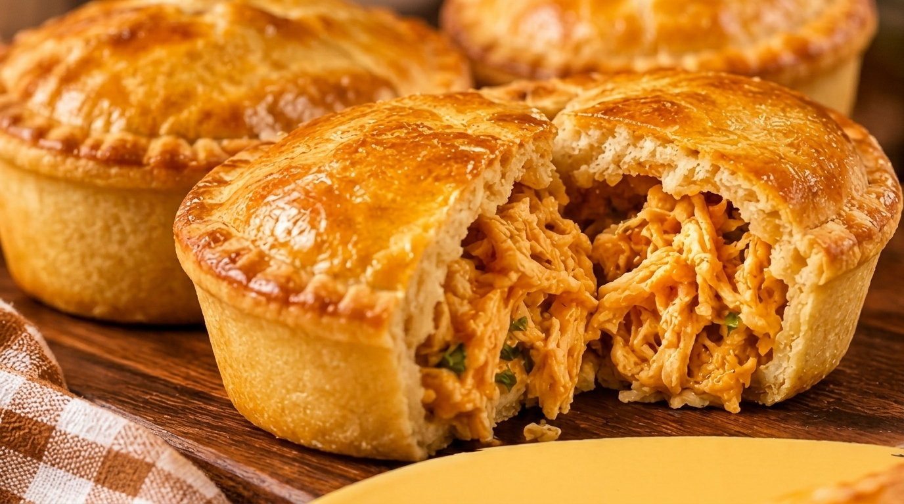

Ingredientes selecionados
Escolha criteriosa de cada ingrediente para garantir sabor marcante, textura perfeita e qualidade em todas as porções.
O sabor genuíno da comida caseira, preparada artesanalmente com dedicação e carinho para tornar cada refeição em família ainda mais especial.


Na Dona Lu, cada massa, empada e molho nasce da dedicação no preparo e do carinho em cada detalhe — com a proposta simples e verdadeira de levar comida caseira de qualidade para a mesa dos nossos clientes.
Valorizamos o tempo certo de cada receita, ingredientes selecionados e o sabor acolhedor de quem cozinha pensando em reunir pessoas queridas ao redor da mesa.
Espaço reservado para compartilhar em breve mais detalhes sobre a história da Dona Lu.
Explore nossas opções de nhoc caseiro, molhos especiais, empadas amanteigadas e sobremesas. Escolha seus favoritos e faça sua encomenda direto pelo WhatsApp.
Cada etapa do preparo respeita o sabor caseiro e a confiança de quem escolhe nossos pratos.
Escolha criteriosa de cada ingrediente para garantir sabor marcante, textura perfeita e qualidade em todas as porções.
Comida de verdade, livre de conservantes artificiais, preservando o frescor e a leveza da culinária caseira.
Massas moldadas e recheios preparados em pequenas produções, com atenção minuciosa ao ponto e ao tempero.
Cada receita carrega o cuidado de quem cozinha para a própria família, levando aconchego até a sua mesa.
Faça sua encomenda diretamente pelo WhatsApp. Tire dúvidas sobre tamanhos, sabores disponíveis e reserve seu nhoc com molho para o domingo.